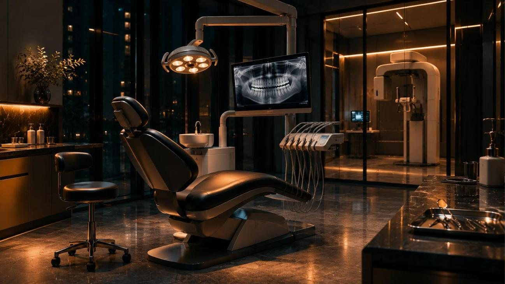
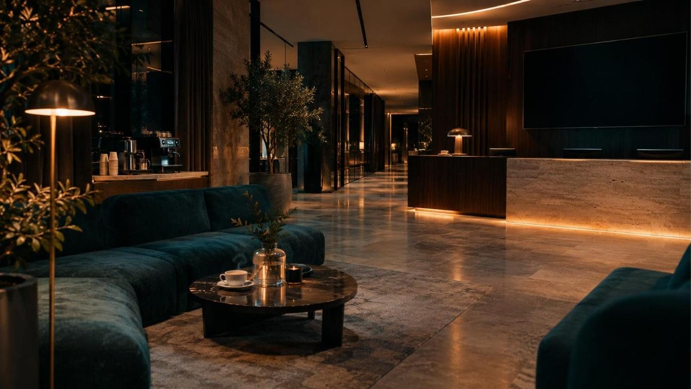

Врач и КТ
в одном месте. Круглосуточно.
Стоматология у дома: от первого приёма до хирургии. Приходите без записи, даже ночью. Снимок делаем здесь же, ехать никуда не надо.
Что случилось?
Обычно на снимок отправляют «куда-то»
Ортопед и ортодонт без КТ работать не могут. В небольших клиниках аппарата часто нет, и пациент едет в другой район, а потом возвращается.
Здесь кабинет КТ за соседней дверью
Пара шагов от кресла врача. Без отдельной записи, без второй поездки, в том числе вечером и ночью.
Врач открывает снимок при вас
Показывает на экране, что происходит с зубом и костью. Вы видите то же, что и он, и можете спрашивать.
Вы уходите с планом и ценой
План лечения письменно. Файл снимка в телефон или на почту. Лечиться можно у нас, а снимок можно забрать и своему врачу.

Кресло врача. За стеклом - КТ.
Кадр для примера, заменим съёмкой клиники после ремонтаТорговый центр закрыт. Клиника открыта.
Самое важное ночью - спокойно дойти. Поэтому у нас отдельный вход, охрана и живой администратор на телефоне.
- ВходС торца здания, вывеска видна с дороги. Главный вход ночью не работает.
- Как войтиДомофон у двери и охрана. Позвоните, если едете: встретим.
- ПоднятьсяЛифт на второй этаж работает всю ночь. С коляской и пожилым родителем удобно.
- Сколько стоитЦену ночного приёма скажем до начала. Делаем только то, что нужно сейчас, остальное решим днём.

Просторно, как в хорошем отеле
Широкие коридоры, большие кабинеты. В холле диваны, кофе и телевизор, пока ждёте результат или близкого.
Кадр для примера, заменим съёмкой клиники после ремонтаНачинаем со стоматологии и идём дальше
Стоматология
Открытие - первымКТ и диагностика
Открытие - первымГинекология
Следующий этапУрология
Следующий этапУЗИ и лаборатория
Следующий этапХирургия
В планахХирург
Удаление, имплантация
Ортопед
Коронки, протезы
Ортодонт
Прикус, брекеты
Терапевт
Лечение зубов
Цена понятна до начала
Цены по ситуациям. Многопрофильная клиника держит их спокойнее, чем узкая. Цифры справа - пример, поставим ваши.
| Снять острую больОсмотр, снимок зуба, обезболивание | от 0 000 ₽ |
| Приём ночьюС 21:00 до 09:00 | от 0 000 ₽ |
| КТ, сегментФайл на почту или в телефон | 0 000 ₽ |
| КТ двух челюстейДля импланта и брекетов | 0 000 ₽ |
| Удаление зубаПростое | от 0 000 ₽ |
| Имплант под ключС планом по КТ | от 00 000 ₽ |
Сначала слушаем
Боитесь? Давно не были? Скажите сразу. Ругать не будем, начнём с того, что беспокоит.
Показываем на снимке
Вы видите проблему и варианты лечения. Дорогой и простой называем оба.
Можно подумать
План с ценой забираете с собой. Никто не торопит решать в кресле.
Близко к дому
Адрес ТЦ, карта и маршрут от метро появятся здесь. На каждый район сделаем свою страницу для поиска.
Правда ли можно без записи ночью?
Да, приходите сразу. Если позвоните с дороги, вас встретят и подготовят кабинет.
КТ работает ночью?
Уточнить у клиники.
Принимаете детей?
Уточнить у клиники, в том числе ночью.
Можно только сделать снимок?
Да. Файл отдаём сразу, с ним можно пойти к своему врачу.
Есть лифт и парковка?
Лифт работает все часы работы клиники. Парковку уточнить у ТЦ.